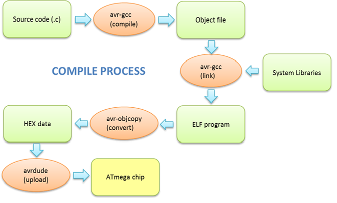
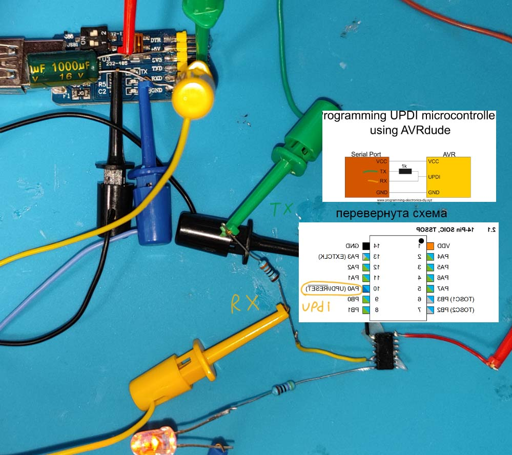
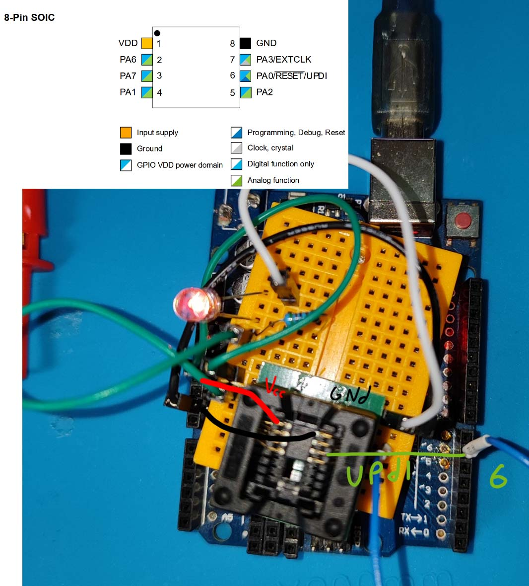
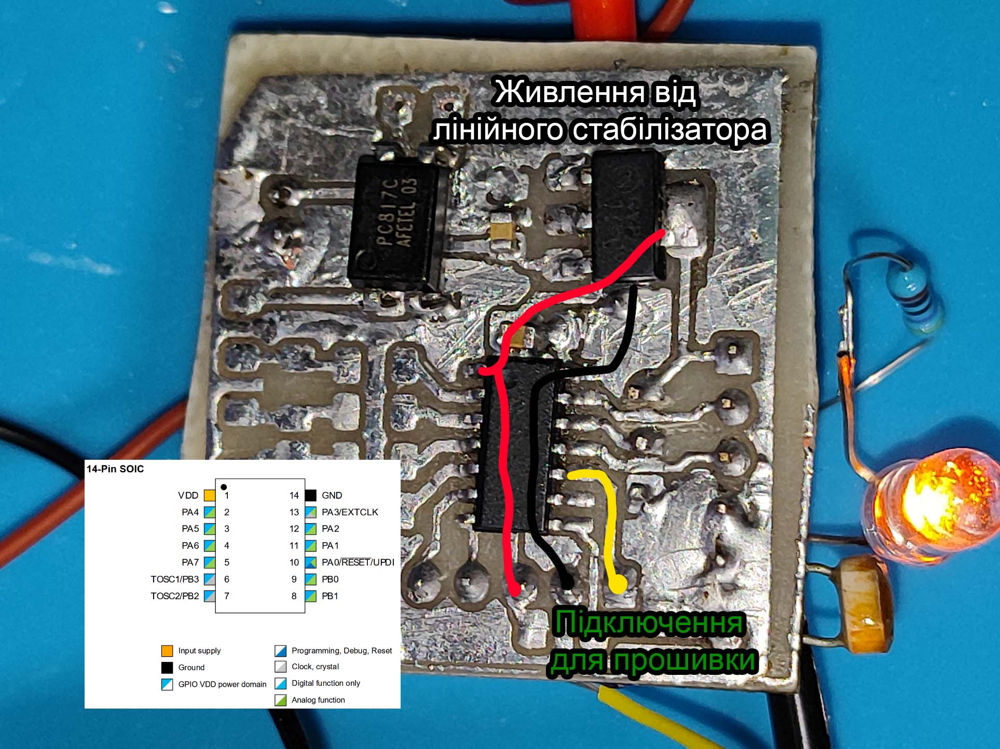
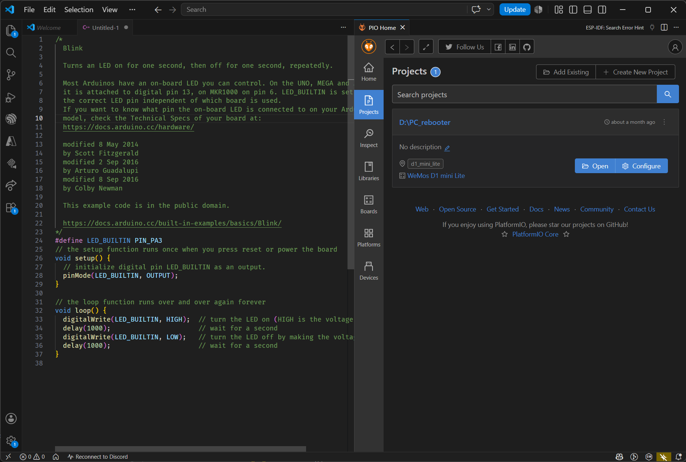
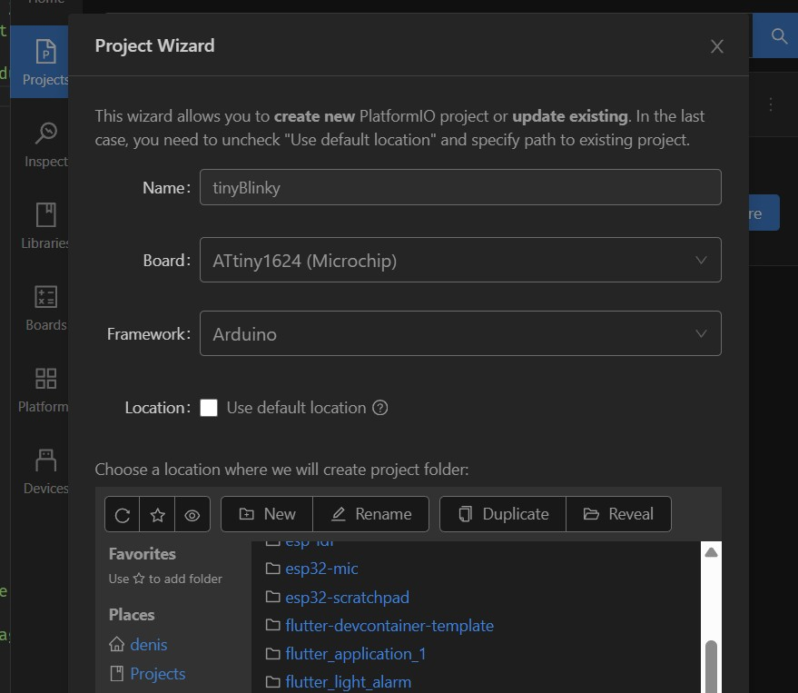
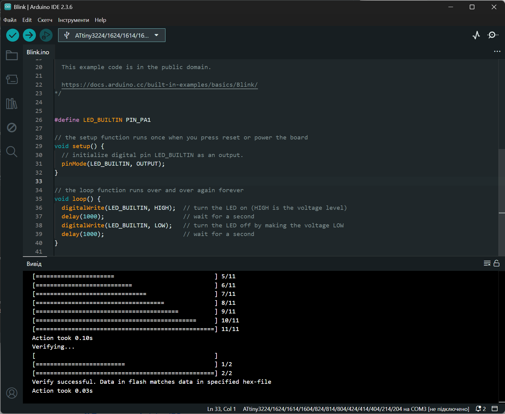
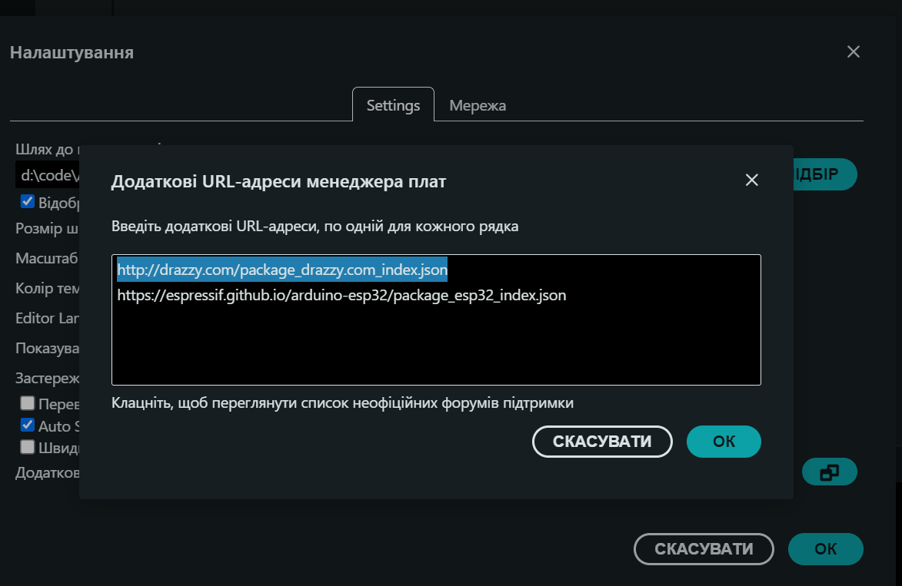

для ATtiny412 / ATtiny1624 (megaTinyCore)
Коли ви переходите від використання готових плат (як-от Arduino Nano) до роботи з окремими мікроконтролерами (bare-metal chips), ви отримуєте повний контроль над "залізом", але берете на себе частину інженерної рутини.
Новітні мікроконтролери AVR (такі як ATtiny412, ATtiny1624, ATmega4809) суттєво відрізняються від класичних моделей (наприклад, ATmega328P, що використовується в Arduino Uno). Вони базуються на оновленій архітектурі AVRxt. Основні архітектурні інновації включають:
Замість класичного 6-пінового інтерфейсу ISP (SPI-подібного), нові мікроконтролери використовують UPDI (Unified Program and Debug Interface). Це пропрієтарний напівдуплексний однопровідний асинхронний інтерфейс для програмування та налагодження.
Для детального ознайомлення з архітектурою та можливостями tinyAVR, рекомендується звернутися до офіційних даташитів від Microchip:
Середовище PlatformIO (або Arduino IDE) не є компілятором само по собі. Це оркестратор, який зчитує
конфігурацію (platformio.ini (або параметри плати)) та автоматично викликає стандартний набір інструментів
розробника (Toolchain), у нашому випадку — пакет avr-gcc.
Процес перетворення тексту програми (вихідного коду) на машинний код, зрозумілий мікроконтролеру, складається з трьох послідовних етапів:
Перетворення чистого C/C++ коду на машинний
код — створення об'єктних файлів (з розширенням .o).
Вони містять нулі та одиниці (машинні інструкції), але адреси пам'яті для функцій та
змінних у них ще відносні, а не остаточні.
Робота компонувальника. Він збирає всі об'єктні файли вашого проєкту, об'єднує їх зі скомпільованими файлами ядра (megaTinyCore) та стандартними бібліотеками, створюючи єдиний файл формату .elf (Executable and Linkable Format). Саме тут усім змінним та функціям призначаються їхні остаточні абсолютні фізичні адреси у Flash та SRAM пам'яті.
Файл .elf містить багато зайвої
для мікроконтролера інформації (наприклад, таблиці символів для дебагу). Спеціальна
утиліта avr-objcopy "вирізає" з нього лише чистий машинний код і
перетворює його у текстовий формат HEX (.hex).

.hex інструмент-завантажувач (avrdude або pyupdi) відправляє побайтово через єдиний
дріт (SerialUPDI) безпосередньо у Flash-пам'ять мікроконтролера ATtiny.
Оберіть метод прошивки, який ви будете використовувати:

Використовується будь-який дешевий USB-UART конвертер (CH340, CP2102, FT232).
Переваги: Нативно підтримується PlatformIO (через pyupdi), максимальна швидкість прошивки, займає мінімум місця.
Він виконує дві критичні функції для апаратного узгодження:
LOW), а вивід TX конвертера
продовжує тримати високий рівень напруги (HIGH).
Якщо у вас немає USB-UART, але є Arduino, ви можете зробити програматор з неї.
RESET та GND на Arduino (це запобігає її
перезавантаженню під час прошивки ATtiny). У автора працювало і без конденсатора, але з
ним буде менше проблем.Припаювання дротів безпосередньо до ніжок SMD-чипа (часто догори дригом, так зручніше). Потребує лише навичок пайки та твердої руки. Якщо випадково злиплися ніжки - капніть флюсом, проведіть паяльником, і підпаюйтесь знову.
Плата-перехідник, що розводить дрібні SMD піни на стандартний крок 2.54 мм. Дозволяє легко замінювати мікроконтролери без необхідності пайки.

Саморобні плати з розпаяним мікроконтролером ATtiny, виведеними пінами, периферією і (часто) стабілізатором живлення.
Виберіть середовище розробки, яке ви плануєте використовувати. megaTinyCore підтримує обидва варіанти.

ATtiny1624, Framework: Arduino. Натисніть Finish.

platformio.iniВідкрийте файл конфігурації у корені проєкту та додайте параметри вашого програматора:
[env:ATtiny1624]
platform = atmelmegaavr
board = ATtiny1624
framework = arduino
board_build.f_cpu = 20000000L ; Частота 20 МГц
; --- Якщо використовуєте SerialUPDI ---
upload_protocol = serialupdi
upload_port = COM3 ; Замініть на свій порт
upload_speed = 115200
; --- Якщо використовуєте jtag2updi ---
; upload_protocol = jtag2updi
; upload_port = COM4 ; Порт вашої Arduino
; upload_speed = 115200Напишіть код у src/main.cpp. У нижній синій панелі VS Code
натисніть іконку ✓ (Build) для компіляції. Після цього натисніть
➔ (Upload) для завантаження коду в чип.
Ось простий приклад, який блимає світлодіодом, підключеним до піна PA6:
#include <Arduino.h>
#define LED_BUILTIN PIN_PA6
// the setup function runs once when you press reset or power the board
void setup() {
// initialize digital pin LED_BUILTIN as an output.
pinMode(LED_BUILTIN, OUTPUT);
}
// the loop function runs over and over again forever
void loop() {
digitalWrite(LED_BUILTIN, HIGH); // turn the LED on (HIGH is the voltage level)
delay(1000); // wait for a second
digitalWrite(LED_BUILTIN, LOW); // turn the LED off by making the voltage LOW
delay(1000); // wait for a second
}
http://drazzy.com/package_drazzy.com_index.jsonmegaTinyCore та натисніть
"Install".
В меню Інструменти (Tools) оберіть відповідні налаштування:
ATtiny1624.
SerialUPDI - 4.7k resistor... АБО
jtag2updi.
Увага: Для завантаження коду ви повинні використовувати
опцію Скетч -> Завантажити через програматор (Upload Using Programmer),
або натискати кнопку Upload, затиснувши клавішу Shift.
Ніколи не змінюйте конфігурацію ф'юзів так, щоб перетворити пін UPDI (PA0) на звичайний GPIO або класичний RESET. Програмування через UPDI — це ваш єдиний спосіб спілкування з чипом. Якщо ви вимкнете UPDI, чип перетвориться на "цеглину" для звичайних програматорів, і для його відновлення знадобиться високовольтний програматор (12V High-Voltage UPDI).
Сучасна інженерія стрімко змінюється. Замість рутинного написання коду студенти та розробники все частіше переходять до "Vibe Coding" — підходу, де людина виступає архітектором, описуючи логіку природною мовою, а рутинне написання синтаксису (особливо низькорівневих регістрів) бере на себе ШІ.
Копіювання коду туди-сюди у веб-браузер швидко стає "пеклом", особливо коли ваш проєкт розростається
на кілька файлів, а ШІ втрачає контекст платформи. Більше того, базові моделі часто галюцинують,
намагаючись застосувати старий код від Arduino Uno (ATmega328P) до нових чипів
ATtiny1624.
Використання розширень зі штучним інтелектом прямо в середовищі Visual Studio Code має критичні переваги для розробки вбудованих систем:
platformio.ini, розуміє структуру вашого проєкту та може самостійно створювати
чи редагувати файли .cpp та .h.
Порада студентам: ШІ не замінює розуміння. Використовуйте агентів у VS Code, щоб позбутися рутини (наприклад, вираховування бітових масок), але завжди перевіряйте логіку. Архітектура пристрою залишається вашою відповідальністю! А ще ШІ фізично не може виправити проблему з електричними з'єднаннями.
AVRxt (tinyAVR 0/1/2-series) від класичних
мікроконтролерів сімейства AVR?.hex файлу).PA0?